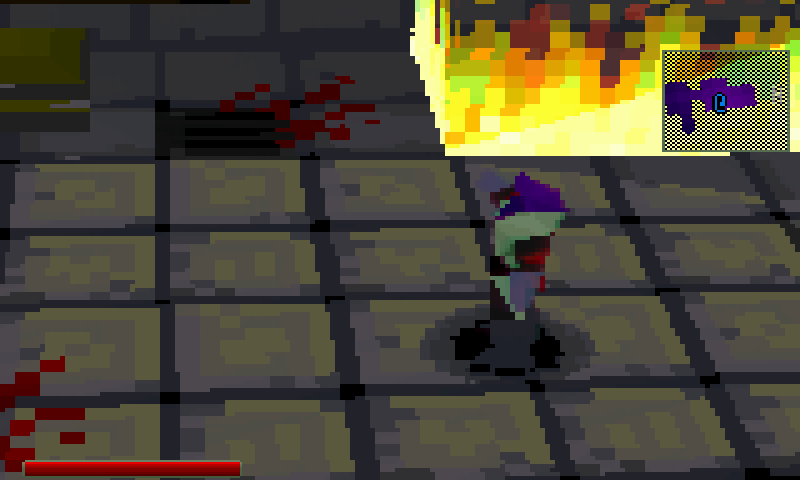
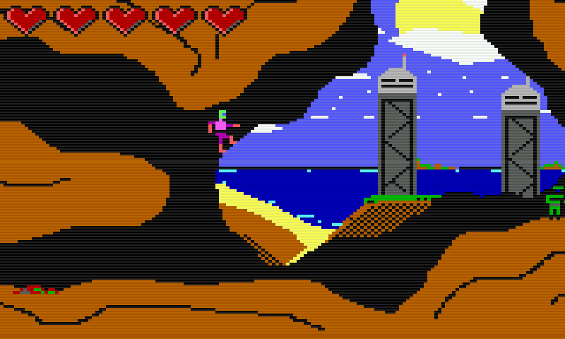
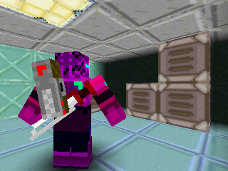
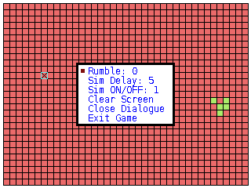

Please report bugs to my gmail.com address (hint:it's at the start of this url).

Flesh Chasmer: The Eve
eve.opk (testing)
Notes:
* Game copies config and save files to "~/.eve"
* Haptic feedback and gsensor support planned.
* Controls are consistent to the caanoo/gp2x/pandora button layout (different name, same position)

Adamant Armor Affection
aaa.opk (testing)
Notes:
* Game does not contain any config or savegame loading, it's just trolling you.
* Haptic feedback planned.
* Controls are consistent to the caanoo/gp2x/pandora button layout (different name, same position). A/X to confirm, Select to quit.
* Sometimes you have to wait for some transition to finish, else hit any button to continue.

Adamant Armor Affection Adventure
aaaa.opk (final)
Notes:
* Read the OPK's manual file for this information.

Lyfe
lyfe.opk (testing)
Notes:
* My implementation of Conway's Game of Life for the GCW0.
* Read github repo for more info.
No content.
{kind=link}
{kind=link}
{kind=link}
{kind=link}